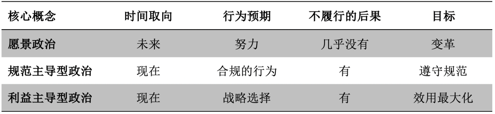
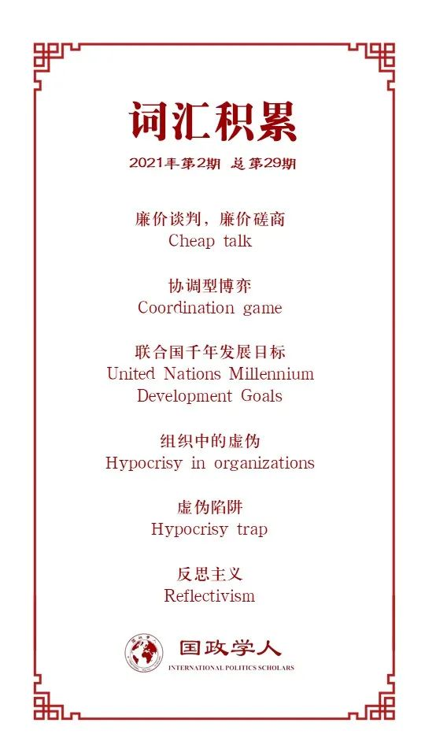

收录于合集

作品简介
【作者】 Martha Finnemore，建构主义著名学者，乔治华盛顿大学艾略特国际事务学院教授；Michelle Jurkovich，麻省大学波士顿分校助理教授。
【编译】 张曼娜（国政学人编译员，吉林大学公共外交学院外交学本科生）
【校对】 胡瑞琨
【审核】 杨稚珉
【排版】 陈育涵
【美编 】杜丛竹
【来源】 Finnemore, Martha, and Michelle Jurkovich. (2020) The Politics of Aspiration. International Studies Quarterly, doi: 10.1093/isq/sqaa052
【归档】 《国际关系前沿》2021年第2期，总第29期。
期刊简介
《国际研究季刊》（International Studies Quarterly）是国际研究协会的旗舰期刊，由牛津大学出版社每年发行四期，旨在发表与国际研究中重要理论性、实证性、规范性主题相关的领先学术成果。根据Journal Citation Reports的数据，该期刊最新影响因子为2.146。
**愿景政治
**
The Politics of Aspiration
Martha Finnemore
Michelle Jurkovich
内容提要
Martha Finnemore是国际政治领域的著名学者。本文探讨了“愿景政治”（the politics of aspiration）这一理念，是一篇理论研究文章。作者将“愿景”这一概念理论化，认为愿景政治不同于现有国际关系模式，并非是规范驱动的行动主义与理性主义模式。作者确定了这一概念的核心特征：崇高的目标、随时间的变化、通过想象的转变，并辩证地探讨了愿景在国际政治中的作用。
文章导读
愿景塑造了政治行动，它阐明目标，确认身份和价值，并在社会生活的所有层面上组织行动。然而学者们却鲜少将愿景理论化——回答有关有关愿景的定义、愿景与其他概念的联系及影响等问题。在本文中，作者认为愿景这一概念创造了一种独特的“愿景政治”（aspirational politics），而非理性主义与行动主义的国际关系（IR）模式。 愿景是一种变革性的、面向未来的“过程”（process），由不同的“社会物质”（social stuff）组成。 作为一个过程，而不是一个对象或属性，愿景为行为体创造了不同类型的政治回报与激励。努力、真诚的意图与朝着愿景目标的前进是愿景政治的独特之处，也是政治回报的核心判断标准。
愿景概念的发展不仅限于理论意义，也将有助于我们理解那些可能的政治难题。其次，更好地理解愿景的性质和作用也有助于我们理解基本政治结构，几乎所有这些结构都建立在宏伟的愿景之上。本文首先发展了愿景的概念，确定了愿景作用于政治的核心特征： 崇高的目标、随时间的变化和通过想象的转变。 随后将讨论重点转向政治行为体为什么和怎样将愿景作为评估潜在利益与成本，并测试这种政治效果的一种工具。本文主要通过讨论愿景在规范构建、激进主义、受众成本、谈判与讨价还价以及在可持续发展目标和气候变化等经验主义议题中的作用来阐述观点。
然而，愿景的政治效用也有其阴暗面，文中讨论了四个潜在的风险：对愿景的推崇可能会降低对政绩的评价标准；可能会产生愿景疲劳；愿景之谈取代了实际行动；愿景可能被操纵以谋私。
01
愿景是什么？
大多数政治理论都认为行为体是目标导向型的，但愿景理论不同。基于Kermit Roosevelt III的观点，我们将愿景理解为一个“存在但尚未完全实现，需要通过改变来实现”的崇高目标。
首先，愿景指的是特定的崇高目标，是一种实现难以实现的目标的决心和愿望。 愿景不一定要符合好的标准才能产生政治影响。本文主要讨论的是一种作为社会和政治现象的愿景，而非个人愿景。 第二，愿景是动态的，是面向未来的，强调达到目标的过程。第三，愿景通过激发想象力推动转变。 拓宽我们想象力的可能仅仅是一些新的事物，这些事物优化并重塑了我们的愿景。只有不断地试错，我们才能更好地理解真正的愿景。
从微观层面来说，愿景是一种新信息，需要有效地传达给缺乏愿景的人，以更新偏好，树立目标。新的不是目标，是其应用方式。沿着这一思路，就到达了所谓“创造性融合”的阶段。想象重新解释现存的目标或价值观，使最终的愿景转化为新的东西。美国宪法中的“法治下的平等保护”愿景就经历了这样的转变，在这一过程中，“平等”与“保护”的概念都得到了重塑与发展。这一连续体的重点将是一个不同于现有社会制度的革命性目标，例如新教改革与《共产党宣言》背后的思想。即使是不切实际的愿景也会产生政治激励。实际上，我们离目标越近，就越能清楚地看到我们缺少的东西。其次，愿景的可行性标准往往是不确定的，只有实践才能产生认知。
02
愿景的政治效用
首先， 愿景决定了政治与社会企业的目标。 政府、政党、非政府组织、商业公司与社会组织都会在其核心文件以及日常实践中宣贯其愿景式目标。愿景也塑造了追求目标的整个过程。愿景激发了人们对行动路线的设想，朝着共同的目标努力，融合想法，并逐渐扩大、完善愿景。Estlund区分了技术性不可能（因缺乏技术而造成）与完全不可能（即使技术上可能也无法实现），而愿景能够推动一个社会技术性可能的标准界限。其次， 愿景决定了身份与价值 。在表达愿景的同时，我们也表达（并在此过程中构建）了自己的身份。
愿景的两个作用互动使得其成为变革的强大动力，在公共和政治环境中尤其如此。宣布崇高的目标并组织集体努力实现这些目标，肯定了行为体的身份，同时，与价值观和身份的联系可以突出目标的崇高性，激励人们追求目标。这一联系还可以扩大目标的受众范围，任何认同所述价值观和身份的人当然都应该朝着目标努力。
03
**
**
与其他概念的比较
作者在这一部分比较了愿景与一系列众所周知的社会科学概念的异同，包括焦点、信誉、名誉、廉价谈判、承诺和规范。
首先，愿景可以作为集体行动的焦点使得目标更突出，但是在博弈论上二者不同。在协调型博弈中，二者没有焦点就无法直接交流，然而愿景因其崇高性广泛被人谈论。因此，愿景往往是为了激发诚意、能力与毅力，而非帮助行为体的交流与协调。
其次，按照信誉与名誉的逻辑理解愿景，人们往往会认为各国会谨慎做出不切实际的承诺，且不履行承诺会受到惩罚。然而实际上愿景政治中的目标和承诺得不到实现，失败者也不会付出代价，例如联合国的千年发展目标。
再次，这些尚未实现的承诺与博弈论中的廉价谈判有着异曲同工之处。在博弈论中，廉价谈判是指无成本、不具约束力、不可验证的、不会影响收益但可以影响结果的交流。这与愿景的宣告相似，但愿景往往提供公开信息，对于人们来说撒谎的成本更低。另外，二者的根本区别在于愿景之谈并不是没有成本的，愿景政治不需要完全实现目标，但需要结合一定的努力才能产生效果。
最后，愿景与承诺或规范的区别在于：承诺或规范建立在义务的基础上，而愿景只关乎意图与努力，努力实现目标这一行为本身就值得称赞。愿景与承诺之差取决于受众对于承诺者的能力以及任务难度的理解，而非承诺者的意图。愿景与规范的不同之处有两个：第一，规范明确规定谁应该做什么，而愿景的表达往往没有提及实现目标的动作与行为体；第二，规范适用于当下或特定的环境，而愿景着眼于未来。规范往往被期望迅速生效，而人们对于愿景何时实现却没有明确的期望。规范产生责任，为抗议者提供目标，为变革者设立焦点。然而着眼于未来的愿景并不一定能做到，那么愿景扮演了什么角色呢？
04
愿景的政治用法
促成协议
在不同的行为体之间就理想的目标达成协议可能比就规范或具体条款达成协议更容易。给具体的行为体分配具体的行动，会产生额外的责任。而把重点放在大家的共同目标上，便成为解决问题关键有效的一步。
愿景可以成为构建规范、政治协议和具体政策的基石。 经典的功能主义观点和当今的建立信任措施，都是以愿景为基础，先找到（或创建）一致的目标和任务，最后逐渐建立信任，“嵌入”（enmeshment）与“溢出”（spillover）效应开始改变激励与态度，最终促成在更棘手的问题上达成协议，而这些协议中便包含了明确的规范和具体条款。愿景的创建与宣告往往是社会变革中至关重要的一步，它为新的规范政策提供了理由和动力。
另一方面，当愿景含混不清时，由其推动的协议可能毫无意义。冷战双方都同意支持联合国在二战后宣布的和平、人权和其他愿景，但这些条款的含义往往截然不同，甚至对立的行为可以服务于共同的愿景。反战的抗议者声称以和平名义行事，而他们反对的政府却认为战争是确保和平的最佳或唯一途径。因此，仅仅就书面上的愿景达成协议还不够，而是要巧妙利用，才能发挥愿景的效用。
动员
愿景影响情绪，激发欲望。 政治家们很清楚这一点，政治辞令，尤其是针对大众的辞令，往往充斥着雄心勃勃的主张。然而公众往往对政客们的愿景声明谨慎以待，甚至愤世嫉俗，哪怕他们经常信守承诺。
理性主义与建构主义都认为愿景的动员力量是社会行为的重要工具。愿景可以释放未来政策和方向的信号，理性主义者会基于行为体过去的声誉以及行为评估愿景的可信度。而通过明确目标和积累信誉，成熟的领导人可以为自己的政策和自己调动支持。建构主义者把愿景式主张看作关于身份和价值的阐述。成熟政客设计的愿景服务于受众的共同身份与价值观。政客利用愿景在自己和追随者之间创造一种基于集体身份的“和谐”，从而有利于塑造他们领导群体的目标，例如，申明和平的共同价值能够动员对冲突局势中的谈判的支持。
05
愿景的潜在风险和后果
问责机制
愿景并不提供简单的问责机制。与承诺和规范不同，愿景的政绩要求更加宽松。以可持续发展目标的“零饥饿”为例，2030年，就算这一目标没有实现，也不会产生任何后果，失败没有成本。
造成这一现象的原因有二。首先，我们通常以目标或承诺的实现为标准判断成功与否，然而实际生活中，这些结果并不是二元的。 在判断愿景成功与否时，努力和意图十分重要。 即使没有达到目标，人们对朝着愿景努力前进的人与无所事事或者虚伪行事的人的评价也是不同的。只要与2015年相比，2030年的饥饿率、贫困率与婴儿死亡率有所下降，教育水平有所上升，可持续发展目标就会受到好评，是否完成全部责任就显得没那么重要了。
其次， 为愿景建立问责机制的困难在于目标的被动性。 人们都认同美好的愿景，但愿景并不明确规定行为体的责任。规范将特定的预期行为分配给特定的行为体，从而使规范成为一种有用的问责工具。愿景可能产生动机，但规范促进问责。愿景政治的问责困难对推动问责制的活动家和试图理解愿景政治的学者都构成了挑战，使得活动家无法鞭笞政客，学者无法对愿景进行工具性分析。
愿景疲劳
公众对愿景的耐心取决于愿景的性质与宣布实现愿景的日期。 人们往往会对更重要、更有价值、更难实现的目标有更多的耐心，比如人们对实现和平与社会正义的耐心往往比对实现减税的耐心大得多。规定愿景实现的日期会使得愿景的动机和紧迫感更强，但也会带来压力。这一压力要么导致目标的延期，要么导致对非理想结果的掩盖与压制，这样一来代价可能会更高。
愿景之谈代替行动
空谈愿景带来的风险是：社会问题，尤其是根深蒂固的结构性问题会延续而非缓解。Nils Brunsson关于组织中的虚伪（hypocrisy in organizations）的重要研究为我们展示了为什么空谈可以代替解决问题的实际行动。空谈可以代替行动，区别在于二者在组织中的属性不同。如Brunsson所阐述的，“行动发生在此时此地，而空谈和决定往往与未来有关，特别是当它们与现有产出不一致时。因此，可以利用未来的特定利益补偿产出的缺乏，或补偿其他方面的利益。”
谈论期望的目标能让组织安抚那些没能得偿所愿的成员。Brunsson认为，这种愿景之谈并非坏事，虚伪是组织生存的基本策略。用关于未来的空谈应对来自外部环境矛盾的、不可能的要求是一种别无选择的明智反应。而这种虚伪可能是社会变革的动力。
然而作者认为，如果愿景之谈永远无法转化为行动，那么这种虚伪可能会导致消极后果，Weaver所述世界银行的“虚伪陷阱”（hypocrisy trap）便是典型的例子。这种虚伪非但没有促进积极的社会变革，反而会导致公众的愤世嫉俗与社会的幻灭。
愿景易被操纵与利用
Drahos将“公众希望”（public hope）定义为“由政治行为体表达或持有的与社会目标有关的希望”，这种希望反映了愿景的情感基础，但也是一种危险。它可以成为“一种操纵工具，一种情感鸦片，政治行为体利用它来削弱对服务于私人而非社会利益的政策的批评”。战争和军事行动总是以保卫自由、传播民主和保家卫国等崇高目标为理由，酷刑和大规模杀戮等战争罪通常对实施该行为的国家公众和犯罪者都是正当的，是实现更大理想目标的必要手段。
问题在于，谁来承担这些成本与风险。在很多情况下，总是问题得不到解决的公民与社会付出代价。正如Brunsson所说，对现代官僚机构而言，言行不一可能是一种能使他们应付无数不可能满足的要求的必要虚伪。然而，它也可以成为掩饰糟糕表现的借口和工具。于是，愿景便成为了应对根深蒂固的结构性社会问题的缓兵之计。如何针对愿景之谈建立问责制，在将愿景作为一种工具加以利用的同时管理其风险，对公众和社会来说都是一个挑战。
06
对理论和实践的启示
理解愿景的政治效用对国际关系中的许多重要对话具有广泛意义。 而对愿景政治与规范或利益主导型政治之间差异的思考有助于我们理解它们在核心逻辑上的重要区别。 愿景政治和规范或利益主导型政治在时间取向、行为预期、不履行的预期后果以及目标本质方面存在差异。 （见表1）。
表1 不同类型的政治比较

愿景不是规范，但它们可以帮助建构主义者以新的方式理解规范的起源和运作。在阐明共同目标和确认身份和价值时，愿景可以作为未来规范的基石。例如，“人人平等”的愿景有助于建立“好的政府有义务确保男女同工同酬”的规范。作者在这里做出预测：未来的研究可能会围绕在规范建立过程中如何使用愿景而展开。
另外， 理解愿景的政治效用也有助于就公众成本展开广泛讨论。 近年来，学术界对国内公众一致惩罚背弃国际承诺的政治领导人的观点提出了质疑，但究竟何时以及为何要付出公众成本仍存在很大争议。公众成本变化的一个原因可能是既定目标或承诺的性质。如前所述，公众对愿景和承诺未被满足的反应截然不同，如果一个陈述被国内公众解读为愿景之谈，那么它在没有实现的时候就不会付出公众成本。
对愿景的理解还有助于我们以全新的方式理解当代政治挑战。 如果我们将《巴黎协定》看作一份愿景式的协议，那么其中“工业化前的温度”的模糊表述也就能够理解了，而不用纠结义务是否得到履行。因此，愿景给政治行为体带来了一些重大利益，然而正如前文所说，将这些协议视为愿景存在着问责缺乏、空谈、愿景疲劳以及谋私的风险。
07
结论
愿景对于当代政治生活必不可少。没有愿景的世界就不会有对美好生活的向往，也不会有“更好”的前进方向。然而，由于对愿景及其政治效用缺乏清晰的认识，研究愿景的学者们在理解这种政治的努力中受到了阻碍。
本文将政治生活中的愿景概念理论化，解释了这个概念与理性主义者和建构主义者所熟悉的现存概念的区别，确定了愿景的政治效用，对其潜在的风险和后果进行了理论化，旨在说明国际关系学者关注政治行为中的愿景的必要性。
译者评述
本文作者较为系统地论述了政治生活中的愿景概念，首先指出愿景具有崇高的目标、随时间的变化、通过想象的转变三个特点，并将愿景概念与焦点、信誉、名誉、廉价谈判、承诺和规范等一系列社会科学概念进行比较，进一步清晰概念。随后，作者指出了愿景在具体的政治场景中的促成协议与动员效用。最后，作者详细论述了愿景在政治应用中的不足之处，包括问责机制的缺乏、易产生愿景疲劳、不务实以及易被操纵等。
正如作者文章开头所说，愿景作为小到个人，大到整个人类社会都使用的概念，少有人思考它的政治意义，遑论将其理论化。本文将政治生活中的愿景理论化，发展出“愿景政治”（the politics of aspiration）这一概念，这一概念横跨了国际关系中的个人、国家与国际社会三个层面。政治意义上的愿景，与传统IR模式中的“国际规范”（international norm）或“国际规则”（international rules）形成了某种对照关系，一定程度上体现了反思主义与理性主义的分野。但作者在肯定愿景的政治价值的同时，并没有否定政治规范、政治承诺等概念，二者应当是相互裨益的关系，文章的目的是将政治生活中的愿景理论化、系统化，从而引起学术界对愿景政治的关注。
个人认为，政治愿景属于一种政治道德。政治愿景的道德性决定了它的不可量化与虚无缥缈。康德政治哲学中的“目的王国”（ein Reich der Zwecke）概念便包含着政治学中较早的对政治愿景的论述。目的王国的政治内涵，其实是康德政治学说所包含的道德愿景的集中说明，其中关于宪制状态、世界公民法权以及国际法与永久和平的论述，便与本文作者所述政治愿景有着异曲同工之处。甚至可以说，这些道德目标，仍旧是当今国际社会的政治愿景。
词汇整理

参考文献
【1】秦亚青：《权力·制度·文化》，北京大学出版社，2005年版。
【2】李育书：《康德目的王国的政治内涵及其道德愿景意义——兼论康德与卢梭政治思想的异同》，载《湖南师范大学社会科学学报》，2019年，第5期。
文章观点不代表本平台观点，本平台评译分享的文章均出于专业学习之用, 不以任何盈利为目的，内容主要呈现对原文的介绍，原文内容请通过各高校购买的数据库自行下载。

好好学习，天天“在看”
国政学人
支持学术公益与知识传播
微信扫一扫赞赏作者 __赞赏
已喜欢，对作者说句悄悄话
取消 __
发送给作者
发送
最多40字，当前共字
上一页 1/3 下一页
长按二维码向我转账
支持学术公益与知识传播
受苹果公司新规定影响，微信 iOS 版的赞赏功能被关闭，可通过二维码转账支持公众号。